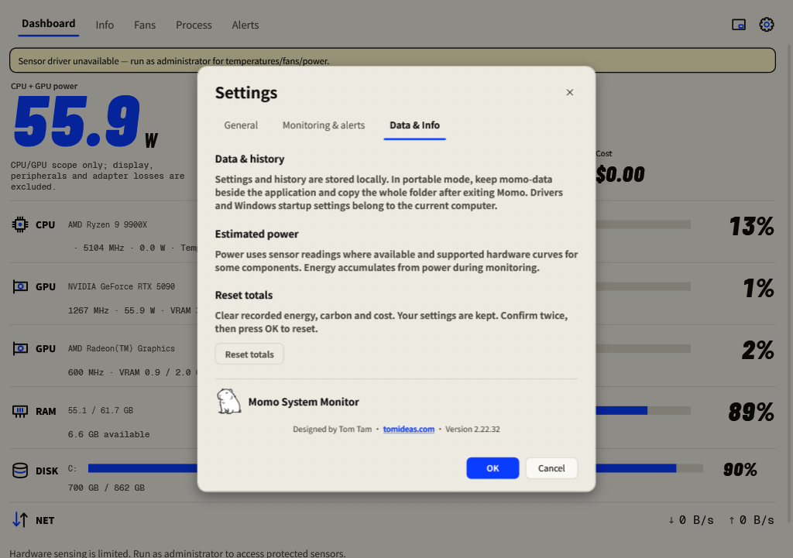

Portable data & backups
Keep your preferences and history together, and move the complete folder safely.
Where data lives
With momo-data beside the executable, Momo stores local data there. Check Settings → Data & Info for storage warnings. Without that folder, the compatibility location is %APPDATA%\StatusMonitor\.
| File | Contents |
|---|---|
| settings.json | Preferences, hardware configuration and a one-way local machine marker. |
| totals.json | Cumulative energy, retained across restarts. |
| energy-history.json | Daily energy records, approximately 400 days. |
| alert-history.json | Recent incidents and recovery information, covering seven days. |
| *.bak | The previous valid version retained by atomic saves. |

Back up or move Momo
- Exit Momo from the tray menu to save the current totals.
- Copy the complete application folder, including the executable and populated
momo-data, to your backup or destination. - Run Momo from the copied folder, confirm your histories are present and check Data & Info for warnings.
- On a different PC, recheck hardware preferences and optional driver/startup setup. Fan controls return to Auto.
When moved to another PC, general preferences and histories remain. Fan identities and profiles, GPU selection, power calibration, Windows startup and Mini-start preferences, and window positions are reset for the new machine. Confirm them before enabling custom hardware control.
Legacy AppData import
An empty portable data folder imports an existing AppData set once. Existing portable data prevents merging. The original AppData files remain intact. Removing momo-data deliberately switches to the compatibility location; it is not a backup procedure.
Storage problems and recovery
Saves are atomic and keep the previous file as .bak. If a file is damaged, Momo tries its backup, reports recovery and preserves the damaged original. If no valid copy exists, the damaged original is protected from being overwritten by default values.
For a write failure, check free space and folder permissions. Move the whole portable folder somewhere writable and restart. Momo reports the failure and does not silently redirect read-only portable data to AppData.